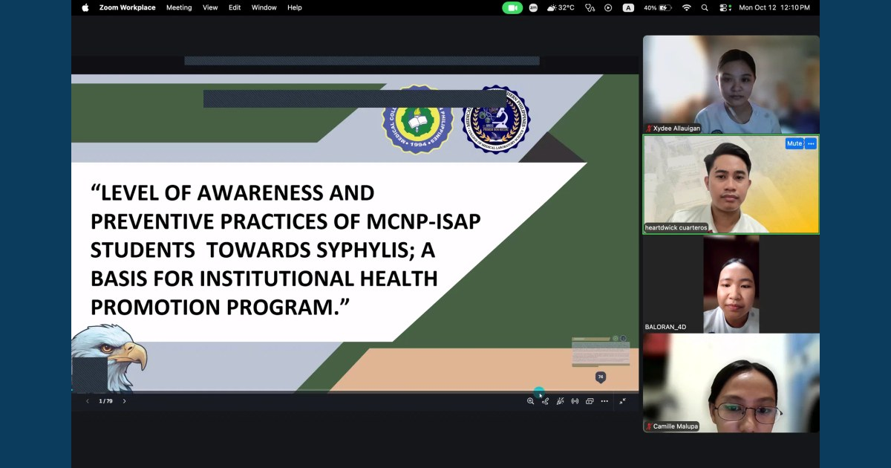

MCNP BSMLS Level 4 Students Advance Research Excellence Through Final Defense

MCNP BSMLS Level 4 students presented and defended their research studies on October 12, 13, and 16, 2026, strengthening scientific inquiry, research communication, and scholarly preparation in medical laboratory science.
Read full article